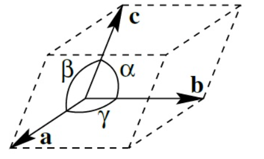

Chapter 2: Diffraction
Basic Crystallography#

part of
MSE672: Introduction to Transmission Electron Microscopy
by Gerd Duscher and Khalid Hattar, Spring 2024
Microscopy Facilities and Ion Beam Facility
Institute of Advanced Materials & Manufacturing
Materials Science & Engineering and Nuclear Engineering
The University of Tennessee, Knoxville
Background and methods to analysis and quantification of data acquired with transmission electron microscopes.
Load relevant python packages#
Check Installed Packages#
import sys
import importlib.metadata
def test_package(package_name):
"""Test if package exists and returns version or -1"""
try:
version = importlib.metadata.version(package_name)
except importlib.metadata.PackageNotFoundError:
version = '-1'
return version
if test_package('pyTEMlib') < '0.2024.1.0':
print('installing pyTEMlib')
!{sys.executable} -m pip install --upgrade pyTEMlib -q
if 'google.colab' in sys.modules:
!{sys.executable} -m pip install numpy==1.24.4
print('done')
done
Load the plotting and figure packages#
Import the python packages that we will use:
Beside the basic numerical (numpy) and plotting (pylab of matplotlib) libraries,
three dimensional plotting and some libraries from the book
kinematic scattering library.
%matplotlib widget
import matplotlib.pylab as plt
import numpy as np
import sys
if 'google.colab' in sys.modules:
from google.colab import output
output.enable_custom_widget_manager()
# 3D plotting package
from mpl_toolkits.mplot3d import Axes3D # 3D plotting
import ase
# Import libraries from the pyTEMlib
import pyTEMlib
import pyTEMlib.kinematic_scattering as ks # kinematic scattering Library
# with atomic form factors from Kirkland's book
# it is a good idea to show the version numbers at this point for archiving reasons.
print('pyTEM version: ',pyTEMlib.__version__)
You don't have igor2 installed. If you wish to open igor files, you will need to install it (pip install igor2) before attempting.
You don't have gwyfile installed. If you wish to open .gwy files, you will need to install it (pip install gwyfile) before attempting.
Symmetry functions of spglib enabled
Qt dialogs are not available
Using kinematic_scattering library version {_version_ } by G.Duscher
pyTEM version: 0.2023.8.0
Define Crystal#
A crystal is well defined by its unit cell and the atom positions within, the so called base. The base consists of which element sits where within the unit cell
The unit cell fills the volume completely when translated in all three directions. Placing the unit cell in a global carthesian coordination system, we need the length of the sides and their angles for a complete description. This is depicted in the graph below. 
Figure taken from the wikipedia page on lattice constants.
Mathematically it is more advantageous to describe the unit cell as matrix, the
Structure Matrix#
This matrix consists of rows of vectors that span the unit cell: \(\begin{bmatrix} a_1 & a_2 & a_3 \\ b_1 & b_2 & b_3 \\ c_1 & c_2 & c_3 \\ \end{bmatrix} =\left[\vec{a},\vec{b},\vec{c}\right]\).
This structure matrix is also used to describe the super cells in materials simulations for example density functional theory.
The representation of unit cells as structure matrices allows also for easy conversions as we will see in the following.
# Create graphite unit cell (or structure matrix)
a = b = 2.46 # Angstrom
c = 6.71 # Angstrom
gamma = 120
alpha = beta = 90
## Create the structure matrix for a hexagonal system explicitly:
structure_matrix = np.array([[a,0.,0.], ## also called the structure matrix
[np.cos(np.radians(gamma))*a,np.sin(np.radians(gamma))*a,0. ],
[0.,0.,c]
])
print('structure matrix \n', np.round(structure_matrix,3))
elements = ['C']*4
base = [[0, 0, 0], [0, 0, 1/2], [1/3, 2/3, 0], [2/3, 1/3, 1/2]]
print('elements:', elements)
print('base \n',np.round(base,3))
structure matrix
[[ 2.46 0. 0. ]
[-1.23 2.13 0. ]
[ 0. 0. 6.71]]
elements: ['C', 'C', 'C', 'C']
base
[[0. 0. 0. ]
[0. 0. 0.5 ]
[0.333 0.667 0. ]
[0.667 0.333 0.5 ]]
Store Information in ASE (atomic simulation environment) format#
atoms = ase.Atoms(elements, cell=structure_matrix, scaled_positions=base)
atoms
Atoms(symbols='C4', pbc=False, cell=[[2.46, 0.0, 0.0], [-1.2299999999999995, 2.130422493309719, 0.0], [0.0, 0.0, 6.71]])
We can retrieve the information stored
print('structure matrix [nm]\n',np.round(atoms.cell.array,3))
print('elements \n',atoms.get_chemical_formula())
print('base \n',np.round(atoms.get_scaled_positions(), 3))
structure matrix [nm]
[[ 2.46 0. 0. ]
[-1.23 2.13 0. ]
[ 0. 0. 6.71]]
elements
C4
base
[[0. 0. 0. ]
[0. 0. 0.5 ]
[0.333 0.667 0. ]
[0.667 0.333 0.5 ]]
A convenient function is provided by the kinematic_scttering library (loaded with name ks)
atoms = ks.structure_by_name('Graphite')
atoms.positions
array([[0.00000000e+00, 0.00000000e+00, 0.00000000e+00],
[0.00000000e+00, 0.00000000e+00, 3.35550000e+00],
[1.23386207e+00, 7.12370598e-01, 0.00000000e+00],
[3.04714108e-16, 1.42474120e+00, 3.35550000e+00]])
Volume of Unit Cell#
We will need the volume of the unit cell for unit conversions later.
Volume of the parallelepiped (https://en.wikipedia.org/wiki/Triple_product) : \(\vec{a} \cdot \vec{b} \times \vec{c} = \det \begin{bmatrix} a_1 & a_2 & a_3 \\ b_1 & b_2 & b_3 \\ c_1 & c_2 & c_3 \\ \end{bmatrix} ={\rm det}\left(\vec{a},\vec{b},\vec{c}\right)\)
We see that the structure matrix comes in handy for that calculation.
volume = v = np.linalg.det(structure_matrix)
print(f"volume of unit cell: {volume:.4f} Ang^3")
volume of unit cell: 35.1660 Ang^3
The same procedure is provided by ase
print(f"volume of unit cell: {atoms.cell.volume:.4f} Ang^3")
volume of unit cell: 35.3925 Ang^3
Vector Algebra in Unit Cell#
We will use the linear algebra package of numpy (np.linalg) for our vector calculations.
The length of a vector is called its norm.
And the angle between two vectors is calculated by the dot product: \(\vec{a} \cdot \vec{b} = \left\| \vec{a} \right\| \left\| \vec{b} \right\| \cos (\theta) \)
Note that python starts couting at 0 and so the second vector has index 1
length_b = np.linalg.norm(structure_matrix[1])
print(f'length of second unit cell vector is {length_b:.3f} Ang' )
gamma = np.arccos(np.dot(structure_matrix[0]/length_b, structure_matrix[1]/length_b))
print(f'angle between a and b is {np.degrees(gamma):.1f} degree')
length of second unit cell vector is 2.460 Ang
angle between a and b is 120.0 degree
Plot the unit cell#
We use the visualization library of ase to plot structures.
from ase.visualize.plot import plot_atoms
plot_atoms(atoms, radii=0.3, rotation=('0x,1y,0z'))
<Axes: >
# This does not work in Google Colab
from ase.visualize import view
view(atoms*(4,4,1))
<Popen: returncode: None args: ['C:\\Users\\gduscher\\AppData\\Local\\anacon...>
from ase.visualize import view
view(atoms*(3,3,1), viewer = 'x3d')
Reciprocal Lattice#
The unit cell in reciprocal space
reciprocal_lattice = np.linalg.inv(atoms.cell.array).T # transposed of inverted unit_cell
print('reciprocal lattice [1/Ang.]:')
print(np.round(reciprocal_lattice,4))
reciprocal lattice [1/Ang.]:
[[0.4052 0.234 0. ]
[0. 0.4679 0. ]
[0. 0. 0.149 ]]
The same function is provided in ase package of Cell.
print('reciprocal lattice [1/Ang.]:')
print(np.round(atoms.cell.reciprocal(),4))
reciprocal lattice [1/Ang.]:
[[ 0.4052 0.234 0. ]
[-0. 0.4679 0. ]
[ 0. 0. 0.149 ]]
Reciprocal Lattice Vectors#
From your crystallography book and lecture you are probably used to the following expression for the reciprocal lattice vectors (\(\vec{a}^*, \vec{b}^*, \vec{c}^*\))
$ \begin{align} \vec{a}^* &= \frac{\vec{b} \times \vec{c}}{\vec{a} \cdot \left(\vec{b} \times \vec{c}\right)} \ \vec{b}^* &= \frac{\vec{c} \times \vec{a}}{\vec{b} \cdot \left(\vec{c} \times \vec{a}\right)} \ \vec{c}^* &= \frac{\vec{a} \times \vec{b}}{\vec{c} \cdot \left(\vec{a} \times \vec{b}\right)} \end{align}$\
Where we see that the denominators of the above vector equations are the volume of the unit cell.
In physics book, you will see an additional factor of 2\(\pi\), which is generally omitted in materials science and microscopy.
## Now let's test whether this is really equivalent to the matrix expression above.
a,b,c = atoms.cell
a_recip = np.cross(b, c)/np.dot(a, np.cross(b, c))
print (np.round(a_recip, 3))
b_recip = np.cross(c, a)/np.dot(a, np.cross(b, c))
print (np.round(b_recip, 3))
c_recip = np.cross(a, b)/np.dot(a, np.cross(b, c))
print (np.round(c_recip, 3))
print('Compare to:')
print(np.round(reciprocal_lattice, 3))
[ 0.405 0.234 -0. ]
[0. 0.468 0. ]
[ 0. -0. 0.149]
Compare to:
[[0.405 0.234 0. ]
[0. 0.468 0. ]
[0. 0. 0.149]]
Conclusion#
With these definitions we have everything to define a crystal and to analyse diffraction and imaging data of crystalline specimens.
Crystallography deals with the application of symmetry and group theory of symmetry to crystal structures. If you want to play around with symmetry and space groups, you can install the spglib. The spglib is especially helpfull for determination of reduced unit cells (the smallest possible ones, instead of the ones with the full symmetry).
A number of common crystal structures are defined in the kinematic_scattering libary of the pyTEMlib package under the function ‘’structure_by_name’’. Try them out in this notebook.
# As ususal the help function will show you the usage of a function:
help(ks.structure_by_name)
Help on function structure_by_name in module pyTEMlib.crystal_tools:
structure_by_name(crystal_name)
Provides crystal structure in ase.Atoms format.
Additional information is stored in the info attribute as a dictionary
Parameter
---------
crystal_name: str
Please note that the chemical expressions are not case-sensitive.
Returns
-------
atoms: ase.Atoms
structure
Example
-------
>> # for a list of pre-defined crystal structures
>> import pyTEMlib.crystal_tools
>> print(pyTEMlib.crystal_tools.crystal_data_base.keys())
>>
>> atoms = pyTEMlib.crystal_tools.structure_by_name('Silicon')
>> print(atoms)
>> print(atoms.info)
Here are all the predifined crystal structures.
Check out the building tutorial of ase for more fun structures like nanotubes
print(ks.crystal_data_base.keys())
dict_keys(['aluminum', 'al', 'aluminium', 'gold', 'au', 'silver', 'ag', 'copper', 'cu', 'diamond', 'germanium', 'ge', 'silicon', 'si', 'gaas', 'fcc fe', 'iron', 'bcc fe', 'alpha iron', 'srtio3', 'strontium titanate', 'graphite', 'cscl', 'cesium chlorid', 'mgo', 'titanium nitride', 'zno wurzite', 'zno', 'wzno', 'gan', 'gan wurzite', 'wgan', 'gallium nitride', 'tio2', 'mos2', 'ws2', 'wse2', 'mose2', 'zno hexagonal', 'pdse2'])
Now use one name of above structures and redo this notebook
Appendix: Read POSCAR#
Load and draw a crystal structure from a POSCAR file
The function#
from ase.io import read, write
import pyTEMlib.file_tools as ft
import os
def read_poscar(): # open file dialog to select poscar file
file_name = ft.open_file_dialog_qt('POSCAR (POSCAR*.txt);;All files (*)')
#use ase package to read file
base = os.path.basename(file_name)
base_name = os.path.splitext(base)[0]
crystal = read(file_name, format='vasp', parallel=False)
return crystal
atoms = read_poscar()
atoms
---------------------------------------------------------------------------
TypeError Traceback (most recent call last)
Cell In[22], line 1
----> 1 atoms = read_poscar()
2 atoms
Cell In[21], line 9, in read_poscar()
6 file_name = ft.open_file_dialog_qt('POSCAR (POSCAR*.txt);;All files (*)')
7 #use ase package to read file
----> 9 base = os.path.basename(file_name)
10 base_name = os.path.splitext(base)[0]
11 crystal = read(file_name, format='vasp', parallel=False)
File <frozen ntpath>:270, in basename(p)
File <frozen ntpath>:241, in split(p)
TypeError: expected str, bytes or os.PathLike object, not NoneType